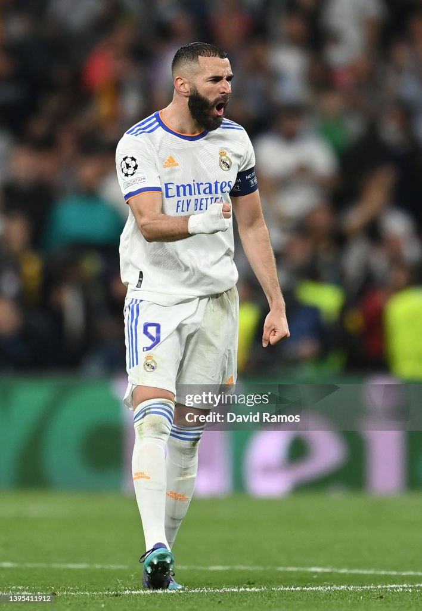
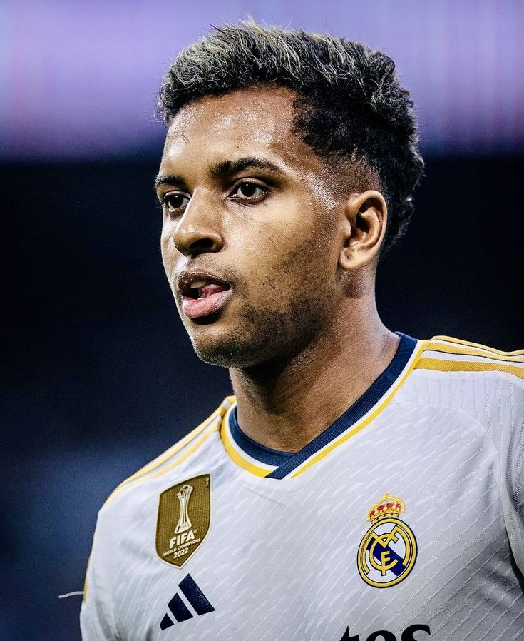
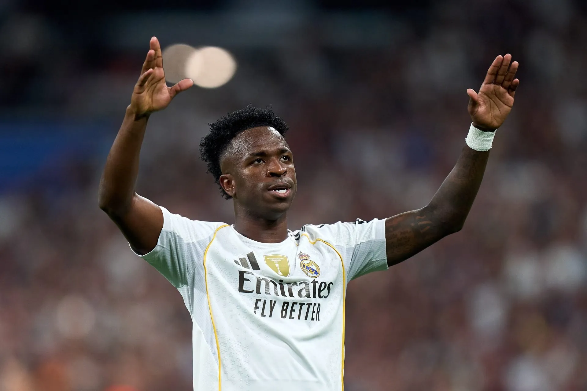
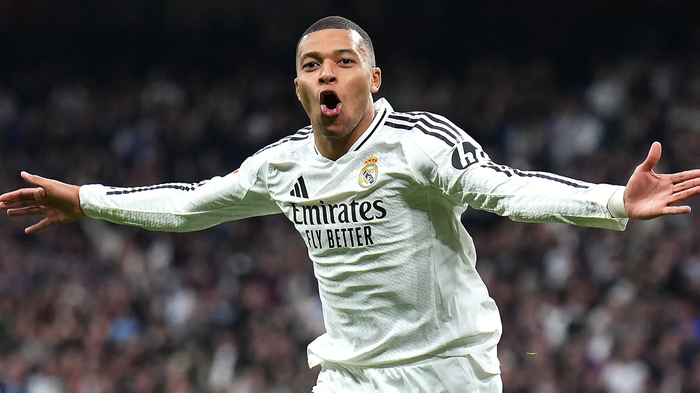

Real Madrid team

Karim Benzema
Karim Benzema az egyik legjobb csillag a Real Madrid CF-ben. A mezőn kívül is híres a tehetsége és a kreativitása, amelyet a játékosok és a közönség is elismeri.
Jude Bellingham
Jude Bellingham az egyik legjobb fiatal középpályás a világon. Érdekesség, hogy mindössze 16 évesen mutatkozott be a felnőttek között a Birmingham City F.C. csapatában, amely később visszavonultatta a mezszámát, hogy elismerje a tehetségét. Ma a Real Madrid CF egyik kulcsjátékosa, és nemcsak gólokat szerez, hanem rengeteget dolgozik védekezésben is.

Rodrygo
Rodrygo (teljes nevén Rodrygo Goes) Brazíliából származik, és fiatalon került a Real Madridhoz. Különösen híres arról, hogy a legfontosabb meccseken is képes gólt szerezni: a 2022-es Bajnokok Ligája-elődöntőben két nagyon késői góljával segítette csapatát a továbbjutásban. ⚽

Vinícius Júnior
Vinícius Júnior a világ egyik leggyorsabb és leglátványosabb futballistája. Amikor 2018-ban a Real Madridhoz igazolt, még csak 18 éves volt, de néhány év alatt a csapat egyik legfontosabb játékosává vált.

Kylian Mbappé
Kylian Mbappé már tinédzserként világsztár lett, és 19 évesen kulcsszerepet játszott abban, hogy a France national football team megnyerje a 2018-as labdarúgó-világbajnokságot. Különlegessége a hihetetlen gyorsasága: teljes sprintben a sebessége elérheti egy profi sprinter szintjét is, miközben labdával is rendkívül veszélyes marad. ⚽🚀
Arda Güler
Arda Güler a török futball egyik legnagyobb tehetsége. Már 18 évesen a Real Madrid játékosa lett, miután több európai sztárklub is szerette volna megszerezni. Sokan „török Messinek” becézik a technikája, kreativitása és bal lába miatt.